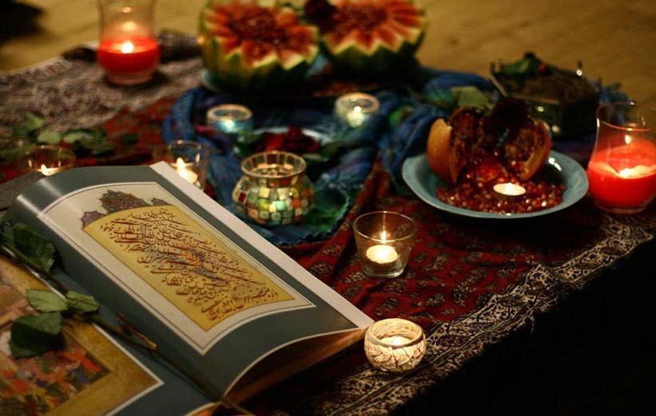

شب چله (یلدا) از نظر علم نجوم
از آغاز تابستان، هر روز خورشید از جای دیروزش کمی نزدیکتر به جنوب طلوع میکند. به همین ترتیب موقع غروب هم از جای قبلش، کمی نزدیکتر به جنوب غروب میکند. این اتفاق، باعث میشود که خورشید هر روز از مرکز آسمان به سمت جنوب متمایلتر شود و طلوع و غروب زودتر اتفاق بیفتد. نتیجه آن کوتاه شده طول روز و افزایش زمان تاریکی است. در روز یکم دی، خورشید در زمان طلوع به پایینترین حد جنوبیش، یعنی ۲۳٫۵ درجه شرقی میرسد. این موقعیت زمین را انقلاب زمستانی مینامند. از این روز به بعد، مسیر جابهجاییهای طلوع خورشید، معکوس میشود. یعنی نقاط طلوع و غروب از سمت جنوب دورتر میشوند و به شمال نزدیکتر. به همین ترتیب روزها بلندتر و شبها کوتاهتر میشوند. این رویداد در یکم تیر از نو تکرار میشود.
فال حافظ در شب یلدا
معمولا در شبهای یلدا بزرگ فامیل به دیوان حافظ تفالی میزند. گرفتن فال حافظ شب یلدا به این ترتیب است که مخاطب فال نیت کرده و بزرگ مجلس این جمله یا شبیه به این را میگوید: «ای حافظ شیرازی، تو کاشف هر رازی، من طالب یک فالم، بر من نظر اندازی…»
بعد لای دیوان را باز میکند. غزل بالای سمت راست، جواب تفال است. اگر وسط غزل باشد، فال از ابتدای غزل که در صفحه پشت است، خوانده میشود. سه بیت از غزل بعدی هم شاهد فال خواهد بود. بعد از خواندن غزل، فال را تفسیر میکند. اگر محتوای شعر مثبت باشد فال را خوب و اگر نباشد آن را بد میدانند. از آنجا که عمده غزلیات حافظ محتوایی عرفانی، عاشقانه و امیدوارکننده دارد، فالها معمولا روحیه بخشند.
شاهنامه خوانی
جزء جداییناپذیر دیگر شب یلدا، شاهنامهخوانی است. این رسم از دیرباز در ایران رایج بوده. جذابیت شاهنامهخوانی به شیوهی نقالی چند برابر میشود. متأسفانه این رسم نقالی در حال نابودی ست. باید خیلی خوش شانس باشید که در خانوادهتان چنین فردی داشته باشید.